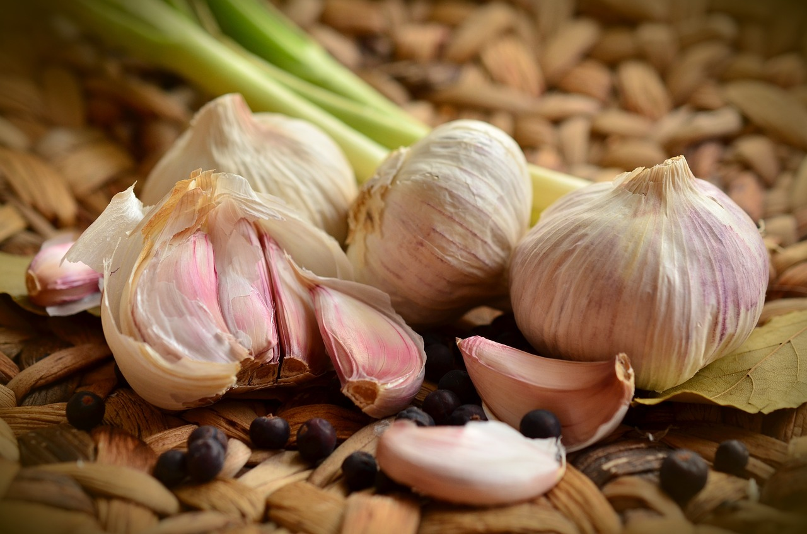

Ajo: propiedades, beneficios y valor nutricional
LÍDIA PENELO, 05 Jul, 2018
El ajo es mucho más que un condimento, es un espantaenfermedades cargado de propiedades nutritivas y beneficios para la salud (los compuestos sulfúricos y sus múltiples fitonutrientes, le dieron esta fama). De ahí que lo de colgar ristras de ajos en las casas no sólo se hacía para espantar a los vampiros, sino porque ya en la Antigua Grecia, Hipócrates, padre de la medicina moderna, lo utilizaba para tratar distintas enfermedades. Su consumo habitual puede ayudar a hacer mejor la digestión, a absorber mejor los nutrientes de los alimentos, y también optimiza las funciones del páncreas y del hígado.
Valor nutricional
El ajo posee un alto valor nutritivo y contiene muy pocas calorías. 28 gramos contienen 42 calorías, y mucha vitamina C, vitamina B6 y manganeso. Tomar un diente de ajo en ayunas puede sonar a remedio de abuela, pero desde la Fundación Española del Corazón (FEC) se recomienda incluir ajo en la dieta no solo para reducir el colesterol malo y proteger nuestro corazón, sino como remedio depurativo, antiséptico y antibacteriano.
Propiedades y beneficios
Mejora la circulación de la sangre
El ajo es rico en vitamina B, un compuesto esencial que reduce los niveles de homocisteína. Esta sustancia es la responsable de endurecer los vasos sanguíneos y de traernos múltiples problemas como trombosis o enfermedades de las arterias coronarias. Consumir un ajo en ayunas nos puede ayudar a combatir estos problemas.
Bueno para el hígado
El ajo es sobre todo un excelente desintoxicante para nuestro organismo. Nos ayuda a depurar toxinas, a eliminar parásitos y a liberar del cuerpo metales pesados como el mercurio o restos de medicamentos que el hígado no puede procesar. El ajo es rico en vitaminas A, B y C, muy adecuadas para estimular las funciones hepáticas. Otra de sus virtudes es la de desinflamar, de ahí que sea muy saludable consumir un ajo diario en caso de tener el hígado graso.
Bueno para resfriados y afecciones pulmonares
Si cada vez que coges un resfriado acabas con mucha mucosas el ajo te viene muy bien porque descongestiona y es un buen antibiótico natural para tratar problemas pulmonares. Si sufres de sinusitis o estás pasando una época con mucha tos, puedes hacer vahos o prepararte algún jarabe a base de ajo.
Reduce los niveles de colesterol
El ajo contiene alicina, una sustancia que cuida de nuestro sistema cardiovascular. Tanto es así que consumir cada día un diente ajo natural puede reducir el colesterol malo en un 9%, así lo asegura la Fundación Española del Corazón.
Cuida nuestro aparato digestivo
No se trata de comerse una cabeza de ajos cada día. La clave está en el equilibrio. Si nos acostumbramos a tomar el ajo como un medicamento cada mañana, en pocos días notaremos sus beneficios. Las digestiones se realizan mucho mejor porque el ajo estimula los ácidos gástricos y los alimentos se digieren y absorben adecuadamente.
Volver